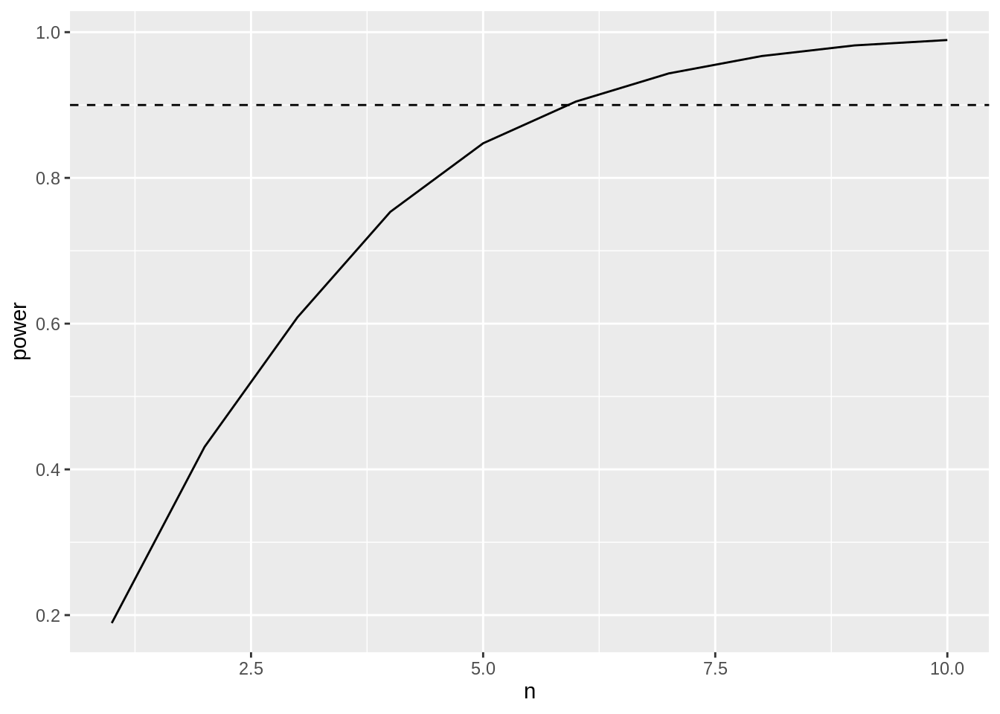
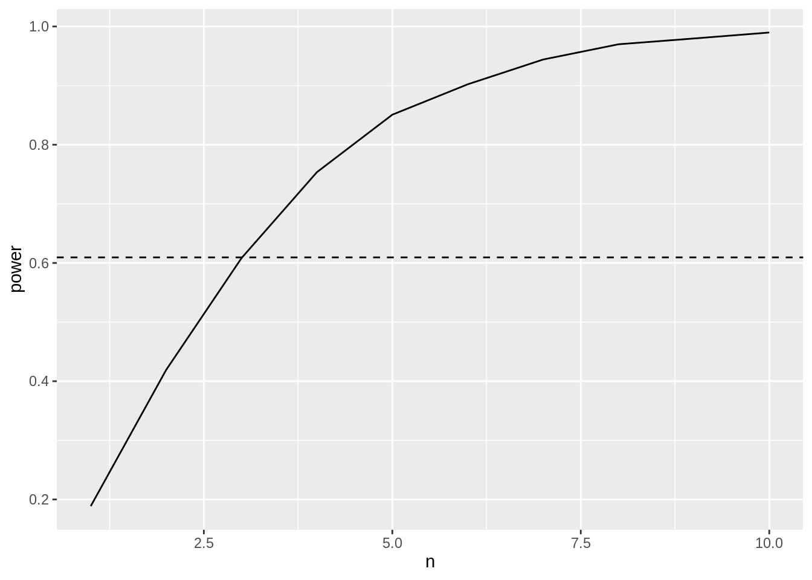

## ── Attaching packages ─────────────────────────────────────── tidyverse 1.3.1 ──
## ✔ ggplot2 3.3.5 ✔ purrr 0.3.4
## ✔ tibble 3.1.6 ✔ dplyr 1.0.8
## ✔ tidyr 1.2.0 ✔ stringr 1.4.0
## ✔ readr 2.1.2 ✔ forcats 0.5.1
## ── Conflicts ────────────────────────────────────────── tidyverse_conflicts() ──
## ✖ dplyr::filter() masks stats::filter()
## ✖ dplyr::lag() masks stats::lag()
Puromycin data
Data on the velocity of an enzymatic reaction were obtained by Treloar (1974). The number of counts per minute of radioactive product from the reaction was measured as a function of substrate concentration in parts per million (ppm) and from these counts the initial rate (or velocity) of the reaction was calculated (counts/min/min). The experiment was conducted once with the enzyme treated with Puromycin, and once with the enzyme untreated.
Here, we will focus again on the enzyme treated data.
data(Puromycin)
Puromycin <- Puromycin %>%
filter(state=="treated")
There was a linear association between the log10 substrate concentration and the reaction rate
Puromycin %>%
ggplot(aes(x=conc %>% log10,y=rate)) +
geom_point() +
stat_smooth(method = "loess",col="red") +
stat_smooth(method='lm',col="black") +
ylab("Reaction Rate (counts/min)") +
xlab("log10(Substrate concentration) (log10 ppm)")
## `geom_smooth()` using formula 'y ~ x'
## `geom_smooth()` using formula 'y ~ x'

Note, that the researchers have chosen 6 different substrate concentrations and conducted an experiment where they assessed the initial reaction rate twice for every concentration.
Use the data to calculate the power to pick up an association that is as least as strong as the association you observed in the dataset when using an experiment with the same design.
Use the data to calculate the power to pick up an association where the reaction rate increases on average with 10 counts/min when the substrate concentration is 10 times higher (\(\beta_1=10\)).
Use the data to calculate the number of repeats you need for each concentration to pick up an association where the reaction rate increases on average with 10 counts/min when the substrate concentration is 10 times higher with a power of at least 90%. (\(\beta_1=10\))
Suppose that you would setup an experiment with a design similar with the same concentrations as in the puromycin dataset and you have the following restriction: you need to use each concentration at least once and can setup at most 12 reactions, how would you choose your design points? Calculate the power for this design when the effect size is 10 counts/min per 10 times increase in the substrate concentration (\(\beta_1=10\)).
Simulation function
Function to simulate data similar to that of our experiment under our model assumptions.
simFast <- function(form, data, betas, sd, contrasts, alpha = .05, nSim = 10000)
{
ySim <- rnorm(nrow(data)*nSim,sd=sd)
dim(ySim) <-c(nrow(data),nSim)
design <- model.matrix(form, data)
ySim <- ySim + c(design %*%betas)
ySim <- t(ySim)
### Fitting
fitAll <- limma::lmFit(ySim,design)
### Inference
varUnscaled <- c(t(contrasts)%*%fitAll$cov.coefficients%*%contrasts)
contrasts <- fitAll$coefficients %*%contrasts
seContrasts <- varUnscaled^.5*fitAll$sigma
tstats <- contrasts/seContrasts
pvals <- pt(abs(tstats),fitAll$df.residual,lower.tail = FALSE)*2
return(mean(pvals < alpha))
}
Power to pick up the same effect size as we observed in the data set with the same design
mod1 <- lm(rate ~ conc %>% log10, Puromycin)
betas <- mod1$coefficients
nSim <- 10000
form <- ~ conc %>% log10
sd <- sigma(mod1)
contrast <- matrix(c(0,1),ncol=1)
rownames(contrast) <- names(mod1$coefficients)
alpha <- 0.05
power <- simFast(form, Puromycin, betas, sd, contrasts = contrast, alpha = alpha, nSim = nSim)
power
## [1] 1
Power for \(\beta_1=10\)
mod1 <- lm(rate ~ conc %>% log10, Puromycin)
betas <- mod1$coefficients
betas[2] <- 10
nSim <- 10000
form <- ~ conc %>% log10
sd <- sigma(mod1)
contrast <- matrix(c(0,1),ncol=1)
rownames(contrast) <- names(mod1$coefficients)
alpha <- 0.05
power <- simFast(form, Puromycin, betas, sd, contrasts = contrast, alpha = alpha, nSim = nSim)
power
## [1] 0.4261
The power to pick up a slope of \(\beta_1=10\) for this experiment is only round(power*100,1)%.
Calculate the number of repeats needed per concentration to obtain a power of 90% to pick up an effect of \(\beta=10\).
mod1 <- lm(rate ~ conc %>% log10, Puromycin)
concentrations <- Puromycin %>%
pull(conc) %>%
unique
betas <- mod1$coefficients
betas[2] <- 10
nSim <- 10000
form <- ~ conc %>% log10
sd <- sigma(mod1)
contrast <- matrix(c(0,1),ncol=1)
rownames(contrast) <- names(mod1$coefficients)
alpha <- 0.05
powers <- data.frame(n = 1:10, power=NA)
for (i in 1:10)
{
simData <- data.frame(conc = rep(concentrations,each=i))
powers[i,2] <- simFast(form, simData, betas, sd, contrasts = contrast, alpha = alpha, nSim = nSim)
}
powers %>%
ggplot(aes(n,power)) +
geom_line() +
geom_hline(yintercept = .9, lty = 2)
 We need which(powers$power>0.9) %>%min repeats for each concentration to obtain a power above 90%.
Optimal design with 12 reactions
concentrations <- Puromycin %>%
pull(conc) %>%
unique
betas <- mod1$coefficients
betas[2] <- 10
nSim <- 10000
form <- ~ conc %>% log10
sd <- sigma(mod1)
contrast <- matrix(c(0,1),ncol=1)
rownames(contrast) <- names(mod1$coefficients)
alpha <- 0.05
simData <- data.frame(conc = c(concentrations,rep(min(concentrations),3),rep(max(concentrations),3)))
powerOpt <- simFast(form, simData, betas, sd, contrasts = contrast, alpha = alpha, nSim = nSim)
simData
## [1] 0.6123
Note that the power for a design where we repeat each concentration 1 time and the minimum and maximum concentration 4 times is considerably higher than that for the designs where we repeat all data points.
powers %>%
ggplot(aes(n,power)) +
geom_line() +
geom_hline(yintercept = powerOpt, lty = 2)
 Indeed, the power for our optimal design with 12 reactions is as high as the power for an experiment where you would repeat every concentration 3 times for which we need to conduct 18 reactions!
LS0tCnRpdGxlOiAiRXhwZXJpbWVudGFsIERlc2lnbiBJSTogcmVwbGljYXRpb24gYW5kIHBvd2VyIGV4ZXJjaXNlIDIiCmF1dGhvcjogIkxpZXZlbiBDbGVtZW50ICYgQWxleGFuZHJlIFNlZ2VycyIKZGF0ZTogInN0YXRPbWljcywgR2hlbnQgVW5pdmVyc2l0eSAoaHR0cHM6Ly9zdGF0b21pY3MuZ2l0aHViLmlvKSIKb3V0cHV0OgogIGh0bWxfZG9jdW1lbnQ6CiAgICBjb2RlX2Rvd25sb2FkOiB5ZXMKICAgIHRoZW1lOiBjb3NtbwogICAgdG9jOiB5ZXMKICAgIHRvY19mbG9hdDogeWVzCiAgICBoaWdobGlnaHQ6IHRhbmdvCiAgICBudW1iZXJfc2VjdGlvbnM6IHllcwotLS0KCjxhIHJlbD0ibGljZW5zZSIgaHJlZj0iaHR0cHM6Ly9jcmVhdGl2ZWNvbW1vbnMub3JnL2xpY2Vuc2VzL2J5LW5jLXNhLzQuMCI+PGltZyBhbHQ9IkNyZWF0aXZlIENvbW1vbnMgTGljZW5zZSIgc3R5bGU9ImJvcmRlci13aWR0aDowIiBzcmM9Imh0dHBzOi8vaS5jcmVhdGl2ZWNvbW1vbnMub3JnL2wvYnktbmMtc2EvNC4wLzg4eDMxLnBuZyIgLz48L2E+CgpgYGB7cn0KbGlicmFyeSh0aWR5dmVyc2UpCmBgYAoKIyBQdXJvbXljaW4gZGF0YQoKRGF0YSBvbiB0aGUgdmVsb2NpdHkgb2YgYW4gZW56eW1hdGljIHJlYWN0aW9uIHdlcmUgb2J0YWluZWQgYnkgVHJlbG9hciAoMTk3NCkuClRoZSBudW1iZXIgb2YgY291bnRzIHBlciBtaW51dGUgb2YgcmFkaW9hY3RpdmUgcHJvZHVjdCBmcm9tIHRoZSByZWFjdGlvbiB3YXMgbWVhc3VyZWQgYXMgYSBmdW5jdGlvbiBvZiBzdWJzdHJhdGUgY29uY2VudHJhdGlvbiBpbiBwYXJ0cyBwZXIgbWlsbGlvbiAocHBtKSBhbmQgZnJvbSB0aGVzZSBjb3VudHMgdGhlIGluaXRpYWwgcmF0ZSAob3IgdmVsb2NpdHkpIG9mIHRoZSByZWFjdGlvbiB3YXMgY2FsY3VsYXRlZCAoY291bnRzL21pbi9taW4pLiAgVGhlIGV4cGVyaW1lbnQgd2FzIGNvbmR1Y3RlZCBvbmNlIHdpdGggdGhlIGVuenltZSB0cmVhdGVkIHdpdGggUHVyb215Y2luLCBhbmQgb25jZSB3aXRoIHRoZSBlbnp5bWUgdW50cmVhdGVkLgoKSGVyZSwgd2Ugd2lsbCBmb2N1cyBhZ2FpbiBvbiB0aGUgZW56eW1lIHRyZWF0ZWQgZGF0YS4KCmBgYHtyfQpkYXRhKFB1cm9teWNpbikKUHVyb215Y2luIDwtIFB1cm9teWNpbiAlPiUKICBmaWx0ZXIoc3RhdGU9PSJ0cmVhdGVkIikKYGBgCgpUaGVyZSB3YXMgYSBsaW5lYXIgYXNzb2NpYXRpb24gYmV0d2VlbiB0aGUgbG9nMTAgc3Vic3RyYXRlIGNvbmNlbnRyYXRpb24gYW5kIHRoZSByZWFjdGlvbiByYXRlCgoKYGBge3J9ClB1cm9teWNpbiAgJT4lCiAgZ2dwbG90KGFlcyh4PWNvbmMgJT4lIGxvZzEwLHk9cmF0ZSkpICsKICBnZW9tX3BvaW50KCkgKwogIHN0YXRfc21vb3RoKG1ldGhvZCA9ICJsb2VzcyIsY29sPSJyZWQiKSArCiAgc3RhdF9zbW9vdGgobWV0aG9kPSdsbScsY29sPSJibGFjayIpICsKICB5bGFiKCJSZWFjdGlvbiBSYXRlIChjb3VudHMvbWluKSIpICsKICB4bGFiKCJsb2cxMChTdWJzdHJhdGUgY29uY2VudHJhdGlvbikgKGxvZzEwIHBwbSkiKQpgYGAKCk5vdGUsIHRoYXQgdGhlIHJlc2VhcmNoZXJzIGhhdmUgY2hvc2VuIDYgZGlmZmVyZW50IHN1YnN0cmF0ZSBjb25jZW50cmF0aW9ucyBhbmQgY29uZHVjdGVkIGFuIGV4cGVyaW1lbnQgd2hlcmUgdGhleSBhc3Nlc3NlZCB0aGUgaW5pdGlhbCByZWFjdGlvbiByYXRlIHR3aWNlIGZvciBldmVyeSBjb25jZW50cmF0aW9uLgoKMS4gVXNlIHRoZSBkYXRhIHRvIGNhbGN1bGF0ZSB0aGUgcG93ZXIgdG8gcGljayB1cCBhbiBhc3NvY2lhdGlvbiB0aGF0IGlzIGFzIGxlYXN0IGFzIHN0cm9uZyBhcyB0aGUgYXNzb2NpYXRpb24geW91IG9ic2VydmVkIGluIHRoZSBkYXRhc2V0IHdoZW4gdXNpbmcgYW4gZXhwZXJpbWVudCB3aXRoIHRoZSBzYW1lIGRlc2lnbi4KCjIuIFVzZSB0aGUgZGF0YSB0byBjYWxjdWxhdGUgdGhlIHBvd2VyIHRvIHBpY2sgdXAgYW4gYXNzb2NpYXRpb24gd2hlcmUgdGhlIHJlYWN0aW9uIHJhdGUgaW5jcmVhc2VzIG9uIGF2ZXJhZ2Ugd2l0aCAxMCBjb3VudHMvbWluIHdoZW4gdGhlIHN1YnN0cmF0ZSBjb25jZW50cmF0aW9uIGlzIDEwIHRpbWVzIGhpZ2hlciAoJFxiZXRhXzE9MTAkKS4KCjMuIFVzZSB0aGUgZGF0YSB0byBjYWxjdWxhdGUgdGhlIG51bWJlciBvZiByZXBlYXRzIHlvdSBuZWVkIGZvciBlYWNoIGNvbmNlbnRyYXRpb24gdG8gcGljayB1cCBhbiBhc3NvY2lhdGlvbiB3aGVyZSB0aGUgcmVhY3Rpb24gcmF0ZSBpbmNyZWFzZXMgb24gYXZlcmFnZSB3aXRoIDEwIGNvdW50cy9taW4gd2hlbiB0aGUgc3Vic3RyYXRlIGNvbmNlbnRyYXRpb24gaXMgMTAgdGltZXMgaGlnaGVyIHdpdGggYSBwb3dlciBvZiBhdCBsZWFzdCA5MCUuICgkXGJldGFfMT0xMCQpCgo0LiBTdXBwb3NlIHRoYXQgeW91IHdvdWxkIHNldHVwIGFuIGV4cGVyaW1lbnQgd2l0aCBhIGRlc2lnbiBzaW1pbGFyIHdpdGggdGhlIHNhbWUgY29uY2VudHJhdGlvbnMgYXMgaW4gdGhlIHB1cm9teWNpbiBkYXRhc2V0IGFuZCB5b3UgaGF2ZSB0aGUgZm9sbG93aW5nIHJlc3RyaWN0aW9uOiB5b3UgbmVlZCB0byB1c2UgZWFjaCBjb25jZW50cmF0aW9uIGF0IGxlYXN0IG9uY2UgYW5kIGNhbiBzZXR1cCBhdCBtb3N0IDEyIHJlYWN0aW9ucywgaG93IHdvdWxkIHlvdSBjaG9vc2UgeW91ciBkZXNpZ24gcG9pbnRzPyBDYWxjdWxhdGUgdGhlIHBvd2VyIGZvciB0aGlzIGRlc2lnbiB3aGVuIHRoZSBlZmZlY3Qgc2l6ZSBpcyAxMCBjb3VudHMvbWluIHBlciAxMCB0aW1lcyBpbmNyZWFzZSBpbiB0aGUgc3Vic3RyYXRlIGNvbmNlbnRyYXRpb24gKCRcYmV0YV8xPTEwJCkuCgojIyBTaW11bGF0aW9uIGZ1bmN0aW9uCgpGdW5jdGlvbiB0byBzaW11bGF0ZSBkYXRhIHNpbWlsYXIgdG8gdGhhdCBvZiBvdXIgZXhwZXJpbWVudCB1bmRlciBvdXIgbW9kZWwgYXNzdW1wdGlvbnMuCgpgYGB7cn0Kc2ltRmFzdCA8LSBmdW5jdGlvbihmb3JtLCBkYXRhLCBiZXRhcywgc2QsIGNvbnRyYXN0cywgYWxwaGEgPSAuMDUsIG5TaW0gPSAxMDAwMCkKewogICAgeVNpbSA8LSBybm9ybShucm93KGRhdGEpKm5TaW0sc2Q9c2QpCiAgICBkaW0oeVNpbSkgPC1jKG5yb3coZGF0YSksblNpbSkKICAgIGRlc2lnbiA8LSBtb2RlbC5tYXRyaXgoZm9ybSwgZGF0YSkKICAgIHlTaW0gPC0geVNpbSArIGMoZGVzaWduICUqJWJldGFzKQogICAgeVNpbSA8LSB0KHlTaW0pCgogICAgIyMjIEZpdHRpbmcKICAgIGZpdEFsbCA8LSBsaW1tYTo6bG1GaXQoeVNpbSxkZXNpZ24pCgogICAgIyMjIEluZmVyZW5jZQogICAgdmFyVW5zY2FsZWQgPC0gYyh0KGNvbnRyYXN0cyklKiVmaXRBbGwkY292LmNvZWZmaWNpZW50cyUqJWNvbnRyYXN0cykKICAgIGNvbnRyYXN0cyA8LSBmaXRBbGwkY29lZmZpY2llbnRzICUqJWNvbnRyYXN0cwogICAgc2VDb250cmFzdHMgPC0gdmFyVW5zY2FsZWReLjUqZml0QWxsJHNpZ21hCiAgICB0c3RhdHMgPC0gY29udHJhc3RzL3NlQ29udHJhc3RzCiAgICBwdmFscyA8LSBwdChhYnModHN0YXRzKSxmaXRBbGwkZGYucmVzaWR1YWwsbG93ZXIudGFpbCA9IEZBTFNFKSoyCiAgICByZXR1cm4obWVhbihwdmFscyA8IGFscGhhKSkKfQpgYGAKCiMjIFBvd2VyIHRvIHBpY2sgdXAgdGhlIHNhbWUgZWZmZWN0IHNpemUgYXMgd2Ugb2JzZXJ2ZWQgaW4gdGhlIGRhdGEgc2V0IHdpdGggdGhlIHNhbWUgZGVzaWduCgpgYGB7cn0KbW9kMSA8LSBsbShyYXRlIH4gY29uYyAlPiUgbG9nMTAsIFB1cm9teWNpbikKYmV0YXMgPC0gbW9kMSRjb2VmZmljaWVudHMKCm5TaW0gPC0gMTAwMDAKZm9ybSA8LSB+IGNvbmMgJT4lIGxvZzEwCnNkIDwtIHNpZ21hKG1vZDEpCmNvbnRyYXN0IDwtIG1hdHJpeChjKDAsMSksbmNvbD0xKQpyb3duYW1lcyhjb250cmFzdCkgPC0gbmFtZXMobW9kMSRjb2VmZmljaWVudHMpCmFscGhhIDwtIDAuMDUKCnBvd2VyIDwtIHNpbUZhc3QoZm9ybSwgUHVyb215Y2luLCBiZXRhcywgc2QsIGNvbnRyYXN0cyA9IGNvbnRyYXN0LCBhbHBoYSA9IGFscGhhLCBuU2ltID0gblNpbSkKcG93ZXIKYGBgCgojIyBQb3dlciBmb3IgJFxiZXRhXzE9MTAkCgpgYGB7cn0KbW9kMSA8LSBsbShyYXRlIH4gY29uYyAlPiUgbG9nMTAsIFB1cm9teWNpbikKYmV0YXMgPC0gbW9kMSRjb2VmZmljaWVudHMKYmV0YXNbMl0gPC0gMTAKCm5TaW0gPC0gMTAwMDAKZm9ybSA8LSB+IGNvbmMgJT4lIGxvZzEwCnNkIDwtIHNpZ21hKG1vZDEpCmNvbnRyYXN0IDwtIG1hdHJpeChjKDAsMSksbmNvbD0xKQpyb3duYW1lcyhjb250cmFzdCkgPC0gbmFtZXMobW9kMSRjb2VmZmljaWVudHMpCmFscGhhIDwtIDAuMDUKCnBvd2VyIDwtIHNpbUZhc3QoZm9ybSwgUHVyb215Y2luLCBiZXRhcywgc2QsIGNvbnRyYXN0cyA9IGNvbnRyYXN0LCBhbHBoYSA9IGFscGhhLCBuU2ltID0gblNpbSkKcG93ZXIKYGBgCgpUaGUgcG93ZXIgdG8gcGljayB1cCBhIHNsb3BlIG9mICRcYmV0YV8xPTEwJCBmb3IgdGhpcyBleHBlcmltZW50IGlzIG9ubHkKYHJvdW5kKHBvd2VyKjEwMCwxKWAlLgoKIyMgQ2FsY3VsYXRlIHRoZSBudW1iZXIgb2YgcmVwZWF0cyBuZWVkZWQgcGVyIGNvbmNlbnRyYXRpb24gdG8gb2J0YWluIGEgcG93ZXIgb2YgOTAlIHRvIHBpY2sgdXAgYW4gZWZmZWN0IG9mICRcYmV0YT0xMCQuCgoKYGBge3J9Cm1vZDEgPC0gbG0ocmF0ZSB+IGNvbmMgJT4lIGxvZzEwLCBQdXJvbXljaW4pCmNvbmNlbnRyYXRpb25zIDwtIFB1cm9teWNpbiAlPiUKICBwdWxsKGNvbmMpICU+JQogIHVuaXF1ZQoKCmJldGFzIDwtIG1vZDEkY29lZmZpY2llbnRzCmJldGFzWzJdIDwtIDEwCgpuU2ltIDwtIDEwMDAwCmZvcm0gPC0gfiBjb25jICU+JSBsb2cxMApzZCA8LSBzaWdtYShtb2QxKQpjb250cmFzdCA8LSBtYXRyaXgoYygwLDEpLG5jb2w9MSkKcm93bmFtZXMoY29udHJhc3QpIDwtIG5hbWVzKG1vZDEkY29lZmZpY2llbnRzKQphbHBoYSA8LSAwLjA1Cgpwb3dlcnMgPC0gZGF0YS5mcmFtZShuID0gMToxMCwgcG93ZXI9TkEpCgpmb3IgKGkgaW4gMToxMCkKewogIHNpbURhdGEgPC0gZGF0YS5mcmFtZShjb25jID0gcmVwKGNvbmNlbnRyYXRpb25zLGVhY2g9aSkpCiAgcG93ZXJzW2ksMl0gPC0gc2ltRmFzdChmb3JtLCBzaW1EYXRhLCBiZXRhcywgc2QsIGNvbnRyYXN0cyA9IGNvbnRyYXN0LCBhbHBoYSA9IGFscGhhLCBuU2ltID0gblNpbSkKfQoKcG93ZXJzICU+JQogIGdncGxvdChhZXMobixwb3dlcikpICsKICBnZW9tX2xpbmUoKSArCiAgZ2VvbV9obGluZSh5aW50ZXJjZXB0ID0gLjksIGx0eSA9IDIpCmBgYApXZSBuZWVkIGB3aGljaChwb3dlcnMkcG93ZXI+MC45KSAlPiVtaW5gIHJlcGVhdHMgZm9yIGVhY2ggY29uY2VudHJhdGlvbiB0bwpvYnRhaW4gYSBwb3dlciBhYm92ZSA5MCUuCgojIE9wdGltYWwgZGVzaWduIHdpdGggMTIgcmVhY3Rpb25zCgpgYGB7cn0KY29uY2VudHJhdGlvbnMgPC0gUHVyb215Y2luICU+JQogIHB1bGwoY29uYykgJT4lCiAgdW5pcXVlCgoKYmV0YXMgPC0gbW9kMSRjb2VmZmljaWVudHMKYmV0YXNbMl0gPC0gMTAKCm5TaW0gPC0gMTAwMDAKZm9ybSA8LSB+IGNvbmMgJT4lIGxvZzEwCnNkIDwtIHNpZ21hKG1vZDEpCmNvbnRyYXN0IDwtIG1hdHJpeChjKDAsMSksbmNvbD0xKQpyb3duYW1lcyhjb250cmFzdCkgPC0gbmFtZXMobW9kMSRjb2VmZmljaWVudHMpCmFscGhhIDwtIDAuMDUKCnNpbURhdGEgPC0gZGF0YS5mcmFtZShjb25jID0gYyhjb25jZW50cmF0aW9ucyxyZXAobWluKGNvbmNlbnRyYXRpb25zKSwzKSxyZXAobWF4KGNvbmNlbnRyYXRpb25zKSwzKSkpCnBvd2VyT3B0IDwtIHNpbUZhc3QoZm9ybSwgc2ltRGF0YSwgYmV0YXMsIHNkLCBjb250cmFzdHMgPSBjb250cmFzdCwgYWxwaGEgPSBhbHBoYSwgblNpbSA9IG5TaW0pCgpzaW1EYXRhCnBvd2VyT3B0CmBgYAoKTm90ZSB0aGF0IHRoZSBwb3dlciBmb3IgYSBkZXNpZ24gd2hlcmUgd2UgcmVwZWF0IGVhY2ggY29uY2VudHJhdGlvbiAxIHRpbWUgYW5kCnRoZSBtaW5pbXVtIGFuZCBtYXhpbXVtIGNvbmNlbnRyYXRpb24gNCB0aW1lcyBpcyBjb25zaWRlcmFibHkgaGlnaGVyIHRoYW4gdGhhdApmb3IgdGhlIGRlc2lnbnMgd2hlcmUgd2UgcmVwZWF0IGFsbCBkYXRhIHBvaW50cy4KCmBgYHtyfQpwb3dlcnMgJT4lCiAgZ2dwbG90KGFlcyhuLHBvd2VyKSkgKwogIGdlb21fbGluZSgpICsKICBnZW9tX2hsaW5lKHlpbnRlcmNlcHQgPSBwb3dlck9wdCwgbHR5ID0gMikKYGBgCkluZGVlZCwgdGhlIHBvd2VyIGZvciBvdXIgb3B0aW1hbCBkZXNpZ24gd2l0aCAxMiByZWFjdGlvbnMgaXMgYXMgaGlnaCBhcyB0aGUKcG93ZXIgZm9yIGFuIGV4cGVyaW1lbnQgd2hlcmUgeW91IHdvdWxkIHJlcGVhdCBldmVyeSBjb25jZW50cmF0aW9uIDMgdGltZXMgZm9yCndoaWNoIHdlIG5lZWQgdG8gY29uZHVjdCAxOCByZWFjdGlvbnMhCg==